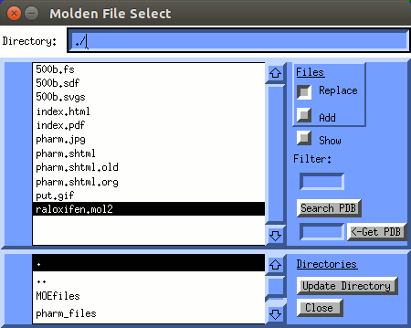
| 3-D searching by Pharmacophore |
|---|
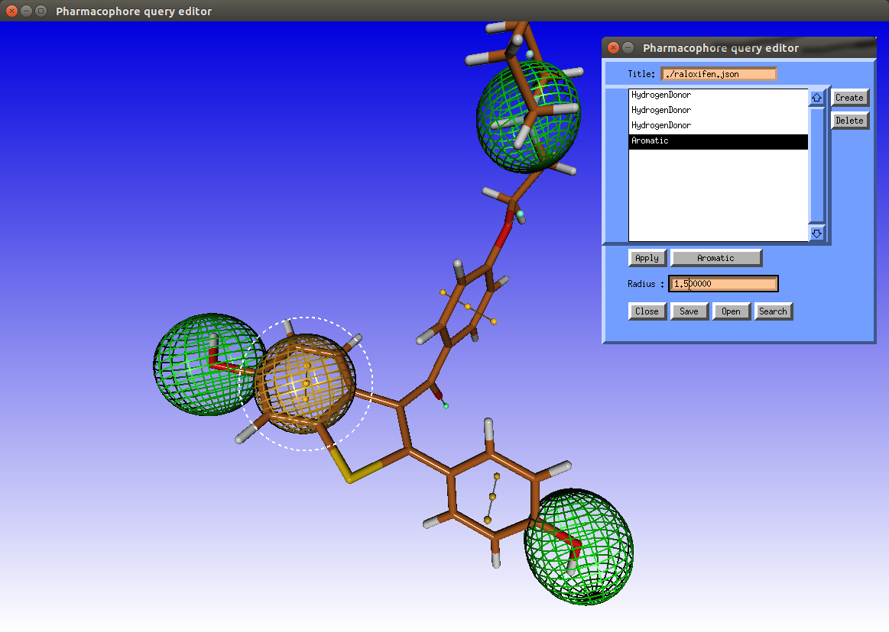
The Raloxifene molecule, with the pharmacophore model overlayed:
We will start with the reading in the known active compound Raloxifene and open the Pharmacophore Query Editor:
|
|  |
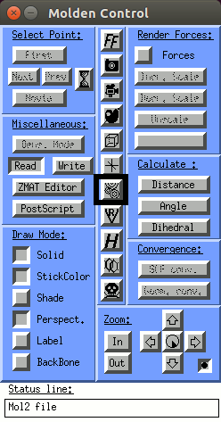 | 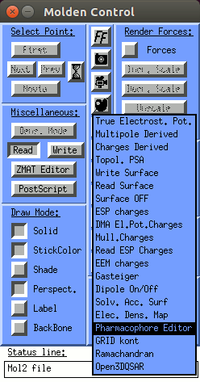 |
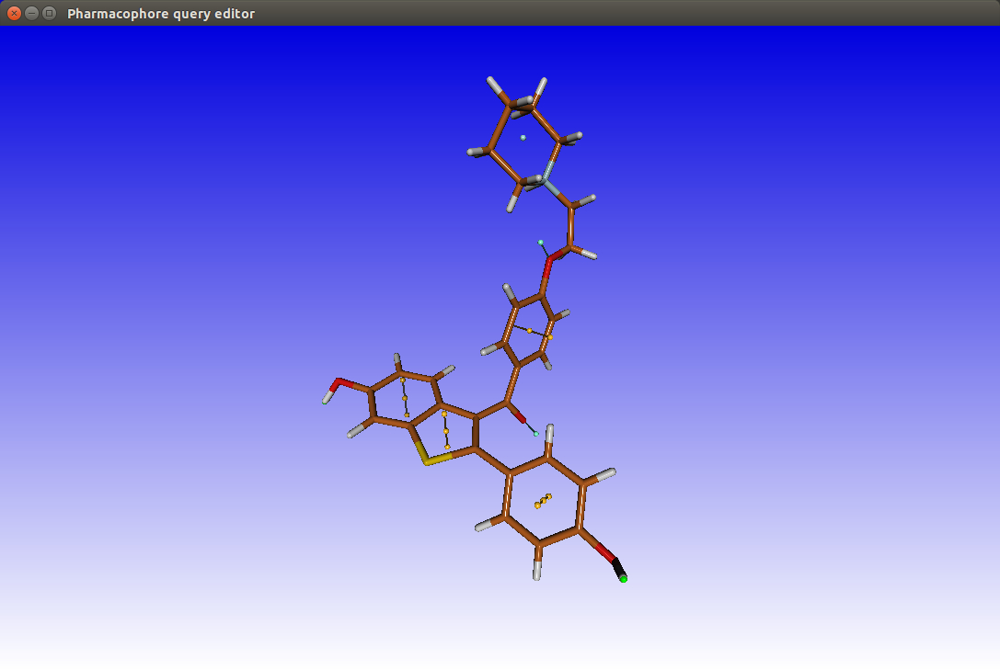 | 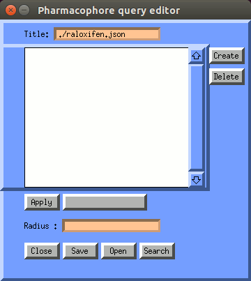 |
The pharmacophore query editor will pop up and colored annotation points appear around the ligand to denote pharmacophoric regions of interest.
>>Select the annotated points corresponding to one of the hydroxyl oxygens
>> Click Create in the pharmacophore query editor >> set the Radius to 1.5 >> and hit the Return key
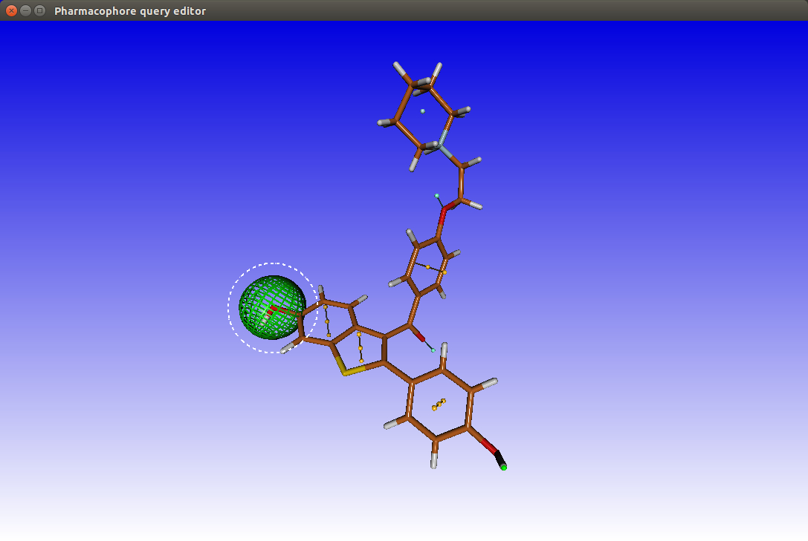 | 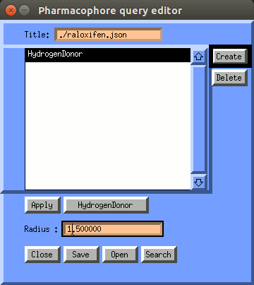 |
>> Repeat this for the second hydroxyl oxygen
>> Finally add a Don donor feature on the tertiary nitrogen, also give it a radius of R=1.5.
To add the last feature, the aromatic feature of the benzothiophene (the phenyl ring connected to one of the hydroxyls and the five-membered ring) has to be defined
>> Click on the annotation point in the centre of this ring.
>> Click Create and adjust the radius to 1.5
Now we have to save the pharmacophore:
In the pharmacophore query editor >> Save >> raloxifen.json >> OK
You can also restore previous pharmacophoe definitions by clicking the
"Open" button. Selections are stored in the
json format.
In Molden database files are presumed to come in the form of a .sdf file or
.mol2 file. Pharmer expects the database in a .sdf file format.
When clicking "Search", the Pharmacophore Search Database window will open.
We will search a database of 4000 compounds/conformations (15 drug) with
the pharmacophore we have just defined.
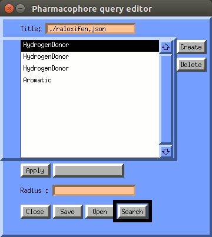 | 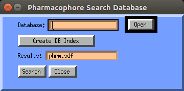 |
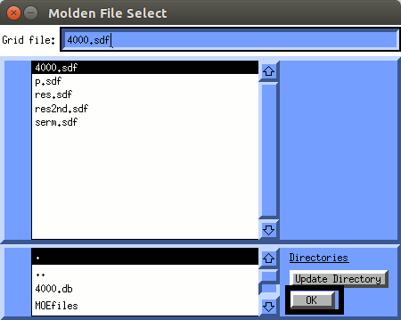 | 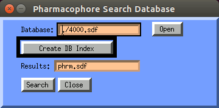 |
Now let's do the search:
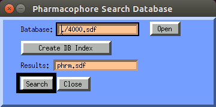 | 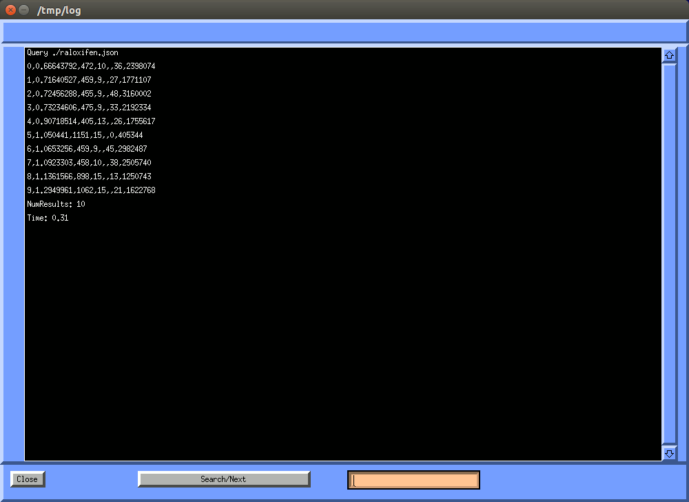 |
In the pharmacophore search window you will find the number of compounds in the database
that fit this pharmacophore: 10 which is ~2% of 500.
Keep the Pharmacophore Editor windows open. This allows the hits in the results database to be viewed together with the pharmacophore features.
|
| 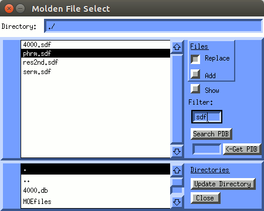 |
The multi-mol database viewer window will pop up.
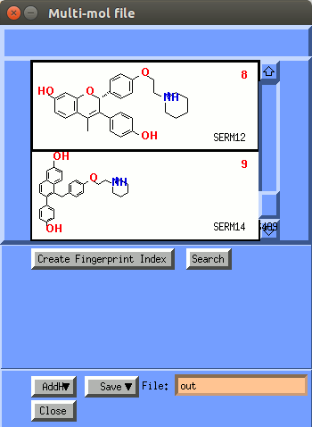
Note that 7 out of the 10 compounds are drugs (serms = Selective Estrogen Receptor Modulators ). However there are 3 false positives and 8 false negatives.
Inspect the hits for the presence of the pharmacophore features we defined.
For each hit:
Click with the left mousebutton in the column with the 2D image in the database viewer
You can use the Up and Down arrow keys to navigate in the database viewer
Notice that raloxifene (SERM05), the active compound we used to construct our pharmacophore from, is amongst the found hits.
Close all open windows except the main Molden window:
Now let's read the original pharmacophore back in:
|
|
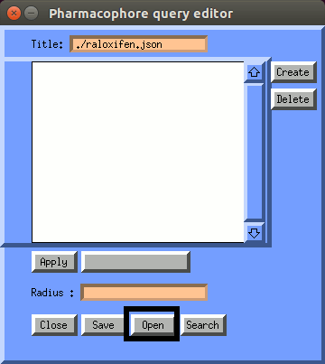 | 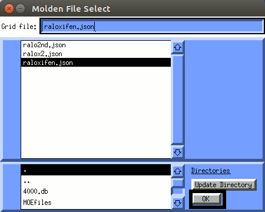 |
Now we are going to modify our pharmacophore by removing one feature:
Select in the Pharmacophore Query Editor the hydroxyl oxygen
furthest away from the benzothiophene.
If you select the features you will see the selected feature highlighted in the main Molden window (by displaying dots around the feature)
>>Press Delete if you have selected the correct feature
Now let us save this pharmacophore under a different name, say ralox2.json:
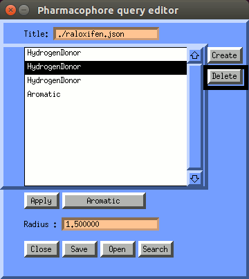 | 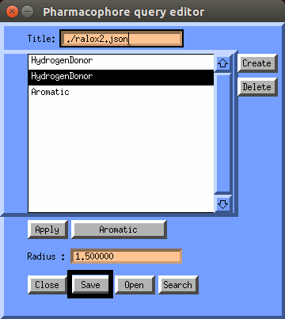 |
Now let's redo the pharmacophore search described above with this new pharmacophore model and let us use a different name for the results database. Let us say phrm2.sdf. If you have done this correctly, you will find 16 compounds. So this pharmacophore is less stringent than the first one we used (we removed a feature).
Inspect the hits for the presence of the pharmacophore features we just defined.
As you can see there were 13 known drugs (serms) found, but also 2 false positives (one compound has hits in two different conformations).
Let's check whether these are really false positives.
Let's overlay one of the potential false positive with the known
active compound we constructed our pharmacophore models from: raloxifene.
Let us overlay our hits with the estrogen receptor alfa structure
co-crystallised with raloxifene: 1err.
For most other molecules you will find that the they don't overlay very well.
This is a first indication that we are dealing with a false positive.
A second and better check is to establishing if there are
clashes between the ligand and residues of the active site of the receptor.
Now you can check the hits again using the database browser.
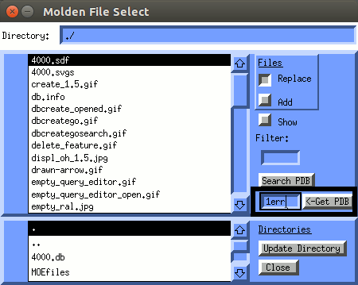 | 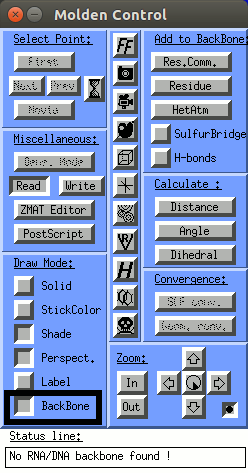 |
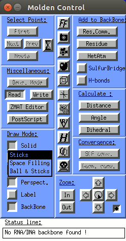 | 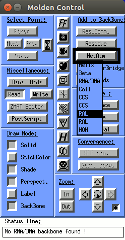 |
To bring up the pop up menu on the ligand, hover the mouse pointer over the ligand untill you see a label displayed (RAL). Then click with the middle mouse button to bring up the pop up menu.
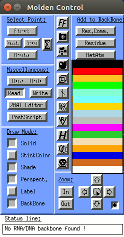 | 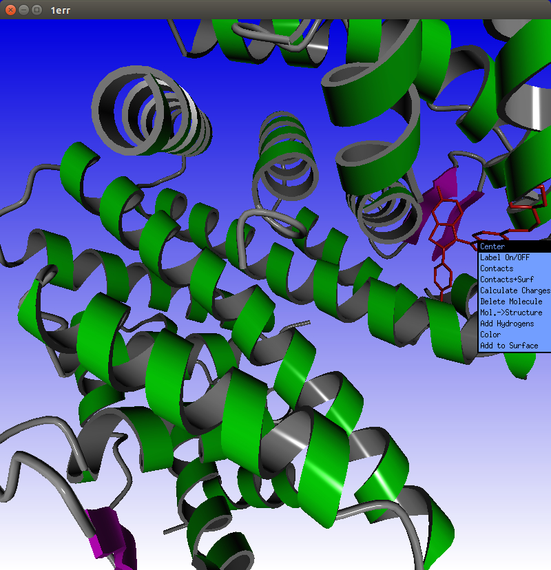 |
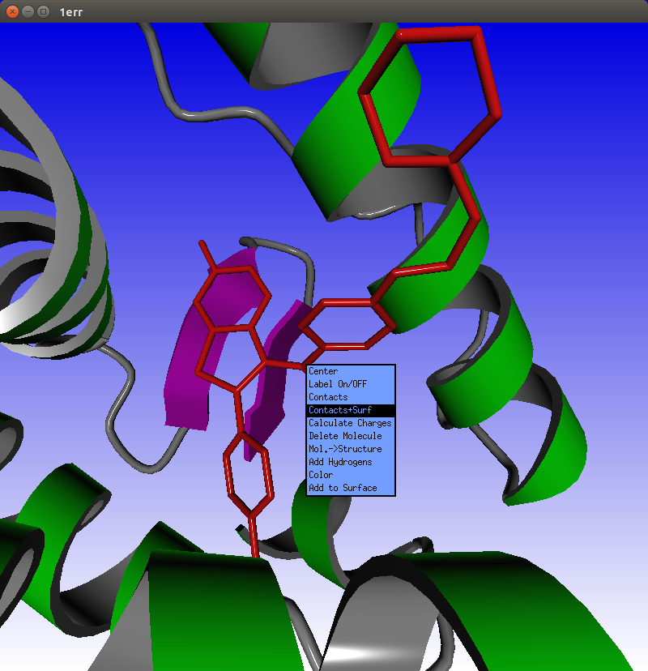 | 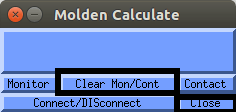 |
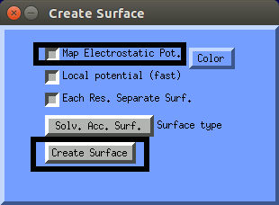 |
|
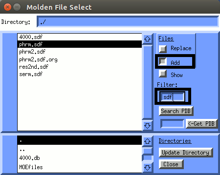 | 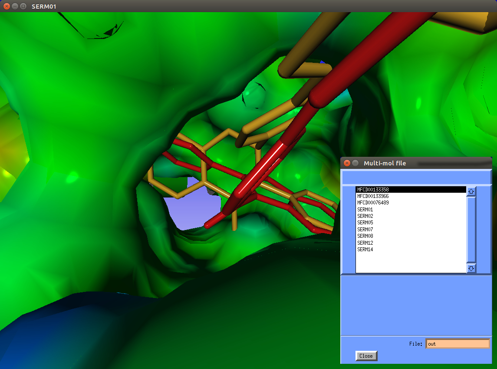 |
The lesson we should have learned here is that a pharmacophore search is not enough to identify known and new active ligand. We should always try to confirm our hits by docking them into the active site (That is, if the 3D structure of the receptor is known).
The devloper of pharmer: David Koes also has the pharmit website available. Have a look at the following URL: